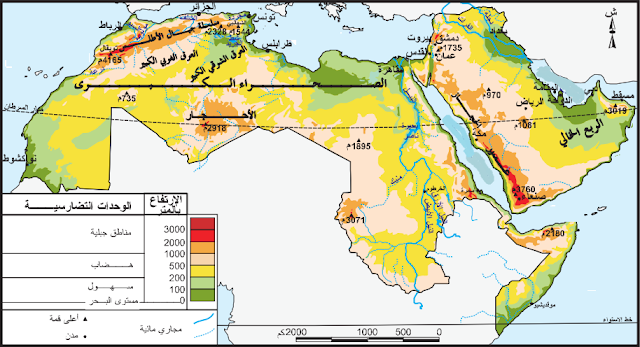

تمارين – الوسط الطبيعي: المزايا والضغوطات
- التصحر:
- ظاهرة بيئية تتمثل في تدهور الأراضي في المناطق القاحلة وشبه القاحلة، وتُعدّ من أهم المشاكل البيئية والاقتصادية في الوطن العربي، ويتركز نصفها في إقليم المغرب العربي.
- الرعي الجائر:
- استغلال المراعي بشكل مفرط يفوق قدرتها على التجدد، مما يؤدي إلى تدهور الغطاء النباتي وتراجع مساحات الغابات خاصة في السودان والصومال.
- الموارد المائية الجوفية:
- المياه المخزنة في باطن الأرض، ويتجاوز أكثر من ثلثيها (2/3) في إقليم المغرب العربي، حيث لا يزال يُستغل 1% فقط منها.
- الزراعة الواحية:
- نشاط فلاحي يعتمد على الموارد المائية العذبة الجوفية أو السطحية في الواحات، وخاصة في مصر والسودان وليبيا والجزائر.
| المؤشر | النسبة (%) |
|---|---|
| نسبة الأراضي القابلة للزراعة من المساحة الكلية | 5.4 |
| نسبة الغابات من مساحة العالم العربي | 3.9 |
| نسبة الأراضي القابلة للزراعة من المساحة الزراعية العالمية | 1.5 |
| حصة العالم العربي من المياه المتجددة | 1 |
المصدر: معطيات الدرس حول ضغوطات الوسط الطبيعي في العالم العربي


يتميز الوسط الطبيعي في العالم العربي بازدواجية المزايا والضغوطات: الضغوطات: تباينات مناخية حادة (160 ملم/سنة مقابل 720 ملم/سنة عالميًا)، تدهور الأراضي الخصبة (5.4% من المساحة الكلية)، تراجع الموارد المائية (1% من المياه المتجددة)، ضعف الغطاء النباتي وتنامي التصحر (3.9% غابات). المزايا: مناطق جبلية خزانات مائية ومجالات سياحية، سهول وأحواض نهرية، صحاري غنية بالموارد الطاقية (30% من الاحتياطي العالمي للغاز)، موارد مائية عذبة، موارد طاقية متجددة، موارد معدنية (حديد، فوسفاط، زنك، رصاص).
- مقدمة: تقديم الوسط الطبيعي في العالم العربي كمجال يجمع بين المزايا والضغوطات.
- تطوير: أولاً. ضغوطات الوسط الطبيعي؛ ثانياً. مزايا الوسط الطبيعي؛ ثالثاً. انعكاسات هذه الثنائية على السكان والتنمية.
- خاتمة: أهمية التخطيط الجيد لاستثمار الموارد ومواجهة التحديات البيئية.
مقدمة
يتميز الوسط الطبيعي في العالم العربي بتباين كبير بين المجالات الصحراوية الشاسعة والمناطق الجبلية والسهول الساحلية والواحية، وهو ما يجعله مجالًا يجمع بين ضغوطات كبيرة ومزايا هامة تؤثر على توزيع السكان وعلى التنمية الاقتصادية.
تطوير
أولاً. ضغوطات الوسط الطبيعي
يواجه العالم العربي ضغوطات طبيعية كبيرة: تباينات مناخية حادة حيث لا يتجاوز معدل تساقط الأمطار 160 ملم/سنة مقابل 720 ملم/سنة عالميًا؛ تدهور الأراضي الخصبة التي لا تشكّل سوى 5.4% من المساحة الكلية (1.5% من المساحة الزراعية العالمية)؛ تراجع الموارد المائية بحصة لا تتعدى 1% من المياه المتجددة مقابل 10% من سكان العالم؛ ضعف الغطاء النباتي وتنامي ظاهرة التصحر التي يتركز نصفها في إقليم المغرب العربي، حيث تراجعت مساحة الغابات إلى 3.9% بعد انفصال جنوب السودان سنة 2011 بفعل الرعي الجائر.
ثانياً. مزايا الوسط الطبيعي
ومع ذلك، لا يخلو الوسط الطبيعي العربي من مزايا هامة: فالمناطق الجبلية (جبال اليمن والأطلس) تشكّل خزانات مائية ومجالات سياحية وملجأ لبعض الأقليات؛ والسهول والأحواض النهرية (النيل، دجلة والفرات) تتيح الزراعة والاستقرار البشري؛ والصحاري غنية بالموارد الطاقية حيث تمثل نحو 30% من الاحتياطي العالمي للغاز الطبيعي؛ كما تتوفر موارد مائية عذبة (في مصر والسودان وليبيا والجزائر) تعتمد عليها الزراعة الواحية، وموارد طاقية متجددة (شمسية وريحية)، وموارد معدنية (الحديد في موريتانيا والجزائر، والفوسفاط في المغرب، والزنك والرصاص في تونس والجزائر).
ثالثاً. انعكاسات هذه الثنائية على السكان والتنمية
تفرض هذه الثنائية بين المزايا والضغوطات على الدول العربية ضرورة التخطيط الجيد لاستثمار مواردها الطبيعية وتوزيع سكانها بشكل متوازن، مع مواجهة التحديات البيئية المتنامية كالتصحر وندرة المياه.
خاتمة
وهكذا يبقى الوسط الطبيعي في العالم العربي مجالًا مزدوجًا بين ضغوطات كبيرة ومزايا هامة، وهو ما يستوجب على الدول العربية تبني سياسات تنموية تراعي خصوصياتها البيئية وتستثمر مواردها بشكل مستدام.